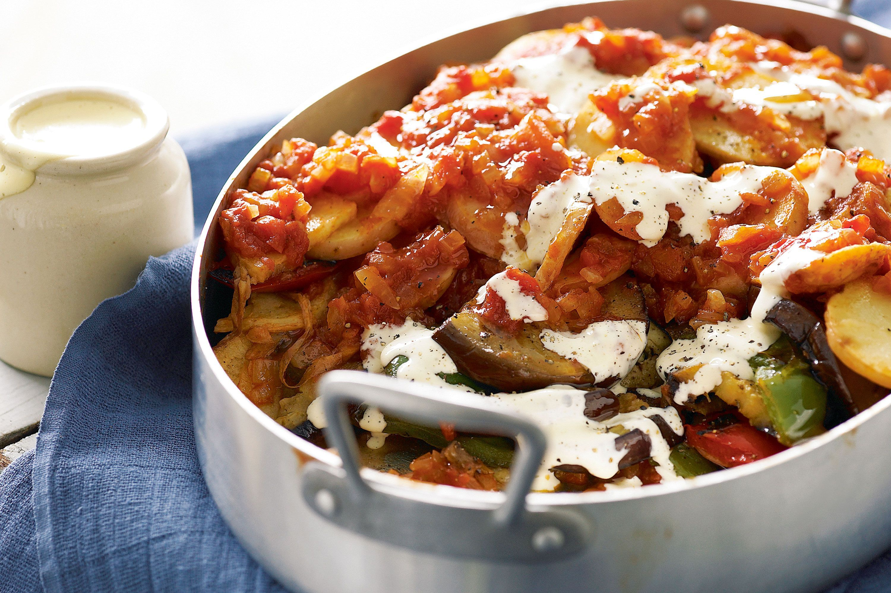

Tumbet is a traditional Mallorcan vegetable dish consisting of baked layers of aubergines, red bell peppers, and potatoes which have previously been fried in olive oil. When served, tumbet is typically topped with a combination of fried tomatoes, garlic, and parsley.
Meal prep time : 1 hour 30 minutes
Servings : 4